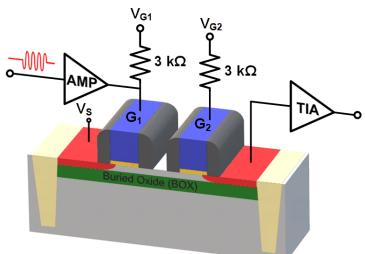
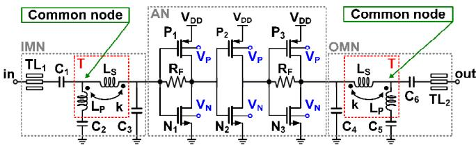
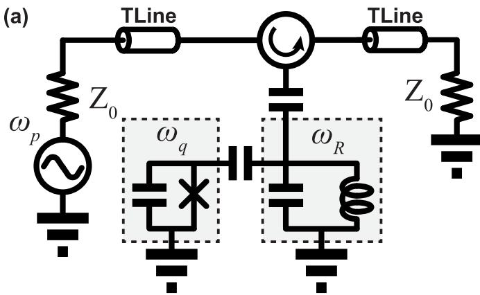
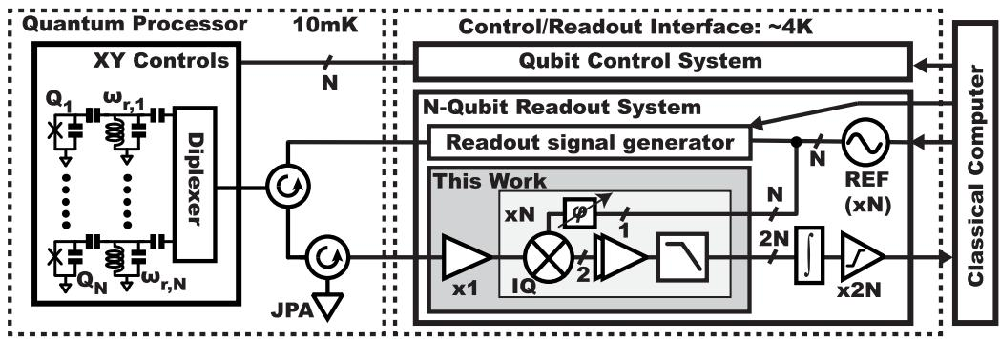
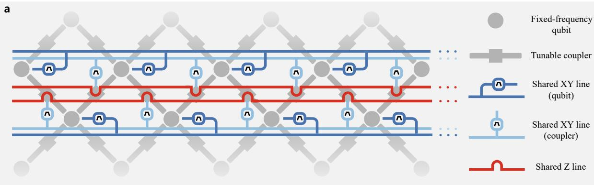
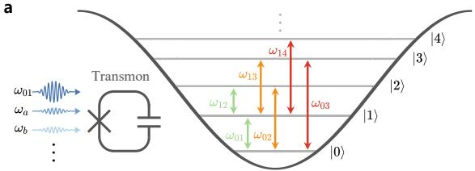
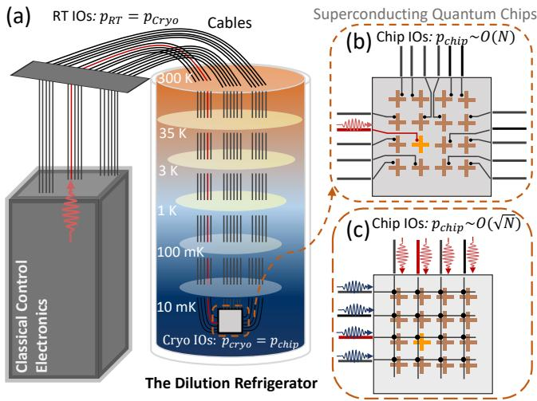
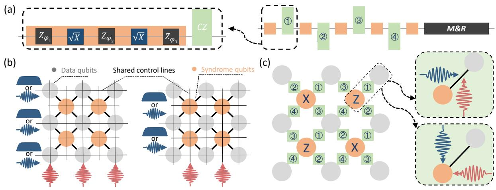
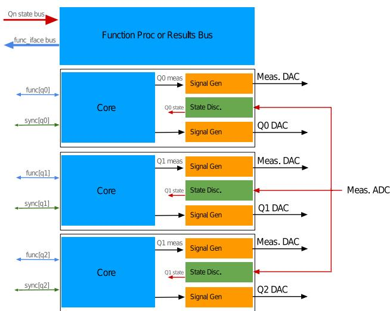
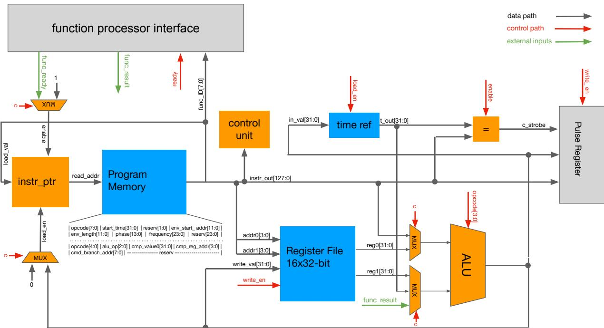

物理图像与目标
一台稀释制冷机（dilution refrigerator）从室温到约 10 mK 通常分 5–6 级冷板——70 K、4 K、Still（约 0.7 K）、100 mK、Mixing Chamber（约 10–20 mK）。样品芯片安装在最低温的 MC 冷板上，但电压、微波和读出电流都必须从室温跨过这些冷板才能到达样品；反向地，量子点给出的 pA–nA 量级电流信号也要先被局部放大再被室温仪器读取。这一跨温区链路被称为低温测控线路（cryogenic wiring / cryo-electronics），它解决两个并行的问题：
- 热噪声抑制：从室温到 10 mK 的温度梯度意味着任何一根导线上都有热噪声电流
其中 是线缆阻抗、 是工作带宽、 是等效电子温度。室温 K 与 mK 端相差 4 个量级，所以室温输入噪声必须先用衰减器”压低”，再用紧贴冷板的多级低通滤波器”滤除”。2. 阻抗匹配与信号传输：50 Ω 同轴线和 PCB 微带线只在端接 50 Ω 时无反射；跨冷板时接头（SMA、K2.92 等）的频率上限（典型 18–26.5 GHz）、半钢线（UT-85/UT-085 等）单位长度衰减、bonding 线自感（每根约 1 nH）共同决定了最大可用带宽。
从量子比特角度看，这条链路是 、、单发读出保真度与多比特扩展能力的”共同瓶颈”——同样的器件样品，更换低温电子学配置（衰减分布、滤波级数、HEMT 替换为 cryo-CMOS LNA 等）通常能把门保真度从约 0.99 推到约 0.999。
理论模型
热噪声与衰减分布
记室温端输入噪声功率谱密度为 ，经过 级衰减器与滤波器后到达样品端的等效噪声温度为各冷板温度按衰减权重的加权平均：
其中 是第 级冷板的物理温度、 是它后面的总衰减量（dB）。要使 mK，最末一级通常需要 20 dB 以上的衰减。
滤波器传输特性
低通滤波器的标准双端口散射参数（谐振腔常用同套描述）记为
其中 是各阶极点频率；通过把所有 串联并乘以各级衰减的 ，可估算有效带宽内的总噪声透射。实测得到，PT2 + MC 两级 20 dB 衰减加 500 MHz 低通可整体衰减 60 dB。
HEMT 与低温放大器的噪声指标
低温放大器放在 MC 冷板或 4 K 冷板，紧贴量子点以缩短信号在低温衰减器中的传输路径。商用 HEMT（LNF-LNC4_8C 等）的关键指标包括：
- 频段：数百 MHz 至数 GHz（覆盖量子点射频反射和腔耦合读出）；
- 增益：约 40 dB（典型平坦值）；
- 噪声温度 （4 K 端测得），相对量子极限 – K 仍偏高。
对半导体量子点，2 K 量级等效输入噪声已经接近高频电子学噪声地板，是电荷传感器单发读出的关键限制之一。需要更低系统噪声时，可在 HEMT 前增加接近量子极限的参量放大器；其增益、饱和功率和磁场兼容性必须与量子点的工作频段及外加磁场共同设计。
cryo-CMOS：把控制电子放进制冷机
当比特数扩展到 100 个以上时，每个比特独立引出几十根偏置线将撞上 Rent 规则的引脚墙。cryo-CMOS 指在 4 K 或更低温度下仍能正常工作的标准 CMOS 集成电路，承担直流偏置产生、波形整形与读出解调。在 4 K 冷板上，单比特操控保真度可达到 99%，并且整芯片可同时驱动多个比特，因此被国际多个小组列为多比特扩展的关键路径。当前主流架构把 cryo-CMOS 放在 4 K 冷板或 PT2 stage（典型 3 K），把传统 HEMT 推后或干脆省掉；CMOS 在 4 K 下的 比室温下降约 30%–50%，但仍远高于比特操控时钟。读出侧的 28 nm FDSOI 已演示单片共集成 SET + 跨阻放大器的无谐振腔频分复用（双通道 2.2 µs 同时读出 99.9% 保真度、CTIA 功耗 428 µW @4.2 K），见单电子晶体管词条的 CTIA 读出一节。
毫米波频段的控制放大已有具体器件案例：Spasaro 等人报道了 22nm FDSOI CMOS 的低温 60 GHz 放大器，2 K 下实测 15 dB @ 59 GHz、3 dB 带宽 52.5–67.5 GHz、功耗仅 2.16 mW，得益于无电感（inductorless）有源网络拓扑，核心面积只有 0.18×0.19 mm²——把毫米波控制信号的产生收进制冷机、贴到比特旁边，是单片硅量子处理器（电子/空穴自旋比特）控制链路的关键积木。

单片集成自旋比特控制链路示例：双量子点自旋比特与 FDSOI CMOS 工艺的控制、读出电路集成在同一芯片上的构型——放大器、脉冲产生器与量子点同处低温，是 cryo-CMOS 控制链路的最终形态。图源：Spasaro et al. (2024)，Fig. 1。

60 GHz 低温放大器电路：有源网络（AN）配合输入匹配网络（IMN）与输出匹配网络（OMN），匹配用螺旋变压器（T）实现——无电感拓扑省去片上大电感，换来 0.18×0.19 mm² 的紧凑核心面积与 2.16 mW 低功耗。图源：Spasaro et al. (2024)，Fig. 2。
SiGe BiCMOS 读出芯片给出另一种工艺选择：低温冷却的 SiGe BiCMOS 集成电路在 6.5 GHz 谐振腔上实现 >98% 读出保真度、功耗仅 6 mW——采用零差检测与本振斩波（LO chopping）新方案抑制低频噪声与直流失调。与 60 GHz CMOS 放大器（单功能积木）不同，这是整芯片级的读出方案（放大+混频+检测），SiGe 的截止频率优势让它在更高频段保持性能。

SiGe BiCMOS 低温读出芯片：6 mW 功耗下 >98% 读出保真度——零差检测与本振斩波（LO chopping）方案。图源：IEEE TMTT (2024)，Fig. 1。

读出保真度表征：6.5 GHz 谐振腔上零差检测的判别统计——98% 以上单发保真度在 6 mW 功耗预算内达成。图源：IEEE TMTT (2024)，Fig. 2。
多路复用控制从布线侧直接减负：共享控制线 + 频分复用 + 独立调谐的组合让单比特与两比特门同时、独立执行而控制线数减少 1~2 个量级——硬件-软件协同设计（量子比特频率规划 + 控制波形设计）使共享线上的信号互不干扰。对照时分复用（牺牲并行度），频分方案保持全并行；配合 cryo-CMOS 与 MMIQC 三维布线，控制基础设施的扩展瓶颈有完整应对组合。

多路复用控制架构：共享控制线经频分复用驱动多个比特与耦合器——独立调谐保证门的同时执行。图源：arXiv:2312.06911，Fig. 1。

共享线控制下的门性能：单/双比特门保真度在复用架构下保持——线数减少 1~2 个量级而不牺牲并行度。图源：arXiv:2312.06911，Fig. 2。
行列寻址（row-column addressing）是频分复用的空间对偶：比特排成阵列，共享行线（Z 控制）与列线（X/Y 控制）—— 个比特只要 根控制线（）。配合片上微波开关选择目标行列，任意单比特可独立寻址；串扰由行列交叉点之外比特的失谐保证。与频分复用（第 39 轮）互补：一个在频率维度、一个在空间维度压缩线数。读出侧的极致版本是 1:1024 高频模拟多路复用器：1024 个量子点共享一条射频反射链路，1 K 以下 5 分钟完成全场表征、最小积分时间 160 ps（见大规模量子点多路复用表征）。

行列寻址架构：共享行/列线 + 片上开关—— 比特 根线的空间复用。图源：arXiv:2403.03717，Fig. 1。

行列寻址的门操作验证：独立寻址下的单/双比特门性能——空间复用不牺牲门保真度。图源：arXiv:2403.03717，Fig. 2。
分布式 FPGA 架构是控制系统的系统级设计：多 FPGA 的分布式控制（每个 FPGA 管理一组比特的实时序列，主机协调全局时序）——把集中式控制的延迟瓶颈分散掉，大规模阵列的实时反馈（QEC 解码）因此可行。Berkeley/LBNL 的实现给出从 FPGA 固件到主机软件的完整开源栈。

分布式 FPGA 控制架构：多 FPGA 分管比特组、主机协调全局——实时序列的延迟瓶颈被分散。图源：Fruitwala et al. (2024)，Fig. 1。

开源控制栈：FPGA 固件到主机软件的完整实现——分布式控制在超导阵列上的落地。图源：Fruitwala et al. (2024)，Fig. 2。
布线介质的选材依据：软带状线（flexible stripline）与同轴电缆在比特控制/读出脉冲上的等效性测量（Bluefors）——两种介质的信号完整性（衰减、色散、串扰）在实用频段内等效；带状线在热负载（热导更低）与密度（更紧凑）上占优。布线选材从此有实验依据而非经验。
半导体量子点端的特殊考量
针对半导体量子点，半导体量子点的链路上还有两点不同：
- 极低电流信号：SET/单空穴晶体管（single-hole transistor, SHT）输出电流在 pA–nA 量级，需要 SR570/SR560 等电流-电压放大器先做 – V/A 量级的跨阻放大，再进入高速 ADC。低频直流读出链路工作带宽约 10 kHz–3 kHz，对应 5 MSa/s 量级采样。
- 射频反射读出：若采用 RF-SET 或谐振反射式读出，则工作频段从 DC 提到 MHz–GHz 量级，对应阻抗匹配、 凹陷深度与带宽都成为主要约束——本节不展开，详见射频反射读出。
双链路案例：triton-300 改装实例
（2014）改装 Oxford Triton-300 的实践给出了半导体量子点实验一个完整链路模板。该链路按”热沉 → 铜粉滤波器 → PCB 板载滤波器”三级级联：
- 热沉：测量与控制线为 Lakeshore SS1 微型同轴线（不锈钢内外导体，FEP 介质，截面积约 49 mm²），在 PT1/PT2/Still/100 mK/MC 五级冷板上用镀金多层夹板”三明治”热沉固定，热交换路径长度的延长使 100 根以上 SS1 线同时放入时 MC 端温度漂移不超过 5 mK。
- 铜粉滤波器：50 μm 直径青铜粉与环氧树脂混合填充 25-pin D 型接头外壳，把 25 路直流信号在 GHz 频段同时滤波，结构紧凑到可以放在 MC 冷板上、紧贴样品；替代了传统放在室温的体积过大的铜粉盒。
- PCB 板载滤波器：板载 DC–300 MHz RC 贴片滤波器 + DC–1 GHz 铁氧体磁珠低通滤波器，覆盖铜粉滤波器失效的 1 GHz 以下频段，同时承担 ESD 防护（防止装样过程中静电击穿栅极）。
热沉 - 铜粉 - PCB 三级叠加的效果：实测把源漏偏置噪声压到 500 fA 以下。
半导体量子点案例：Triton-500 Si-MOS 链路
（2025）使用 Triton-500 + Cooner AS636-1SS 同轴线：
- 直流线在每一级冷板用热沉绕线固定，线与线之间是独立同轴屏蔽，串扰远低于双绞线；寄生电容结合大电阻本身具有低通滤波效果，故 MC 层不另加滤波器。
- 高频线使用 UT-85 半钢线 + SMA 头（最大有效频率 26.5 GHz），4 K 加 6 dB、MC 加 10 dB 衰减；如需更高频段可换 K2.92 头。
- readout 链路室温用 Stanford SIM-928 + 1000:1 分压器作 SET 偏置，DLPCA-200 转阻放大器输出电压信号，再经二级 JFET 放大（SIM-910）放大 100 倍，最后 Bessel 滤波以保持相位延迟不变性，由 Alazar ATS9440 高速采集卡以 100 kSa/s 采样。
关键物理量与量级
| 量 | 典型值 | 备注 / 出处 |
|---|---|---|
| 稀释制冷机 MC 端温度 | – | |
| Triton-400 PT2 stage 温度 | ||
| 4 K 冷板噪声温度贡献 | （HEMT LNF-LNC4_8C） | |
| 铜粉滤波器填充介质 | 直径 50 μm 青铜粉 + 环氧树脂 | |
| PCB 板载 RC 滤波器 | DC–300 MHz | |
| 板载铁氧体磁珠滤波器 | DC–1 GHz | |
| flux pulse 衰减 | ||
| flux offset 总滤波 | RC（2 MHz–2 GHz）+ 铜粉 + 1.9 MHz 低通 = dB at MHz | |
| Lakeshore SS1 线截面积 | 49 mm² | |
| 100 根 SS1 线引入 MC 端温漂 | ||
| 改装 Triton-300 源漏噪声 | ||
| Si-MOS 直流线寄生滤波截止 | ~1.9 MHz（min-circuits BLP-1.9+） | |
| Si-MOS 高频线衰减分布 | 4 K 6 dB + MC 10 dB | |
| 4 K cryo-CMOS 单比特操控保真度 | 99% | 综述引文 |
| HEMT 增益（4–8 GHz） | / | |
| HEMT 噪声温度 | ||
| J-TWPA 增益带宽（1.2 GHz 3 dB） | 5 dB 峰值增益 | |
| J-IMPA 饱和功率 | ||
| 微波源脉冲调制开关比 | 40 dB → 120 dB（启用 PM） | |
| bias-tee K251 频段 | RF 1 MHz–40 GHz / DC DC–20 kHz | |
| 锁相放大器 SR830 激励幅值 | （柱塞栅） | |
| SR570/SR560 低通截止 | 10 kHz / 3 kHz | |
| ADC 采样率（量子点电荷读出） | ||
| RF-SET 谐振频率 | 160.1 MHz | |
| RF-SET 凹陷峰谷差 | 30 dB | |
| RF-SET RTS 频率 | 145.7 kHz |
实验特征
- 链路分级不能倒置：指出，把所有衰减器都集中放在 MC 层理论上能更好地抑制上级噪声，但会让 MC 层总功耗超过冷头制冷功率，反而推高样品温度；正确做法是按 PT2/MC 两级分摊。同一链路对 Z-control（窄带、低噪声敏感）必须用 RC + 铜粉 + 低通级联，而 XY-control 与 readout in（信号与噪声同频段）只允许衰减、不允许滤波。
- 阻抗失配决定 HEMT 实际增益：HEMT 输出端反射回来的信号会带回 2.1 K 的噪声，并对量子比特产生扰动；解决方法是 HEMT 后加 3 dB 衰减器并使用 3 个环形器级联把反射信号导入 50 Ω 接地端口。
- bonding 线自感是关键瓶颈：指出，每根 1 mm 左右的 wire-bonding 线约 1 nH 自感，会引起驻波与信号泄露；立体封装（弹簧针 + 铜腔）把驻波模式挤压到 20 GHz 以上。
- 铜粉滤波器位置是工程关键：传统体积过大无法放入制冷机底部，必须用绕线柱间共用滤波铜粉 + SMA → 25-pin D 型接头的方案把体积压到 MC 端可放；这是把滤波效果从”室温”挪到”芯片附近”的代表性改动。
- 大电流偏置带来的离子注入区加热：Petta 组在 SiGe 体系上利用 HEMT 放大器 + RF-SET 读出把 CZ 门保真度显著提高，验证了 cryo-LNA 对双比特门的实际增益（ 综述引文）。
与其他概念的关系
- 自动调控把所有电压配置视作”在 cryo-electronics 的能力范围内做闭环寻优”；cryo-CMOS 实时产生 + 自动调控实时更新是闭环自动化的两条互补路径。
- 虚拟电极与交叉电容矩阵关注的是同一根栅极在 cryo-electronics 的有限动态范围（典型 ±10 V、14-bit）下的电压精度分配；cryo-CMOS 可在 4 K 端做实时电压补偿，是虚拟电极的硬件实现。
- 单发读出的信噪比直接受 cryo-LNA 噪声温度与带宽限制：HEMT 噪声温度 2 K 对应电荷传感器的本底噪声下限，再低就需要 cryo-CMOS 或 J-Amp。
- 射频反射读出把链路上限从 kHz 提到 100 MHz 以上，对应 cryo-electronics 切换到匹配网络 + 高频衰减 + cryo-LNA 的配置。
- 屏蔽与滤波改进的验证由多时间量子过程层析承担：改进前后各跑一次多时间层析，过程矩阵之差即噪声通道的真实变化——准粒子、串扰等非马尔可夫关联由此定量化。
- 大规模量子点多路复用表征与高温自旋比特运行：从两端夹击布线墙——片上 FET 开关树把引脚数按 Rent 定律压缩（16 区近十倍、2 K/强磁场运行），比特侧则把可用温区推到 750 mK 靠近集成电子学的散热预算。
- 参量放大器（J-Amp/J-TWPA）是 cryo-electronics 在量子比特读出端的近量子极限放大，与本节 HEMT 形成代次互补；其中行波方案（JTWPA）的器件原理与设计维度见约瑟夫森行波参量放大器专页。
- Purcell filter把”读出链路对 qubit 退相干的影响”用 与 解析地纳入链路设计，是 cryo-electronics 在 readout 端的设计参数。
- 电荷噪声是 cryo-electronics 必须抑制的扰动源；指出同轴线 + 热沉方案能直接降低离子注入区因加热产生的额外电荷跳变。
- 几何量子门的噪声鲁棒性取决于 cryo-electronics 对共振频率噪声的注入量； 中”几何门对比传统动力学门在 1 K 噪声下表现更稳”的几何增益，部分来自 cryo-electronics 决定的噪声谱形。
参考文献
- Paluch, P., Spiecker, M., Gosling, N., Vermeulen, K., Bouman, D., Wernsdorfer, W., Pop, I. M. Thermalization of a flexible microwave stripline measured by a superconducting qubit (2024). arXiv:2410.01053（QAtlas 缓存：2410.01053）。
完整文献库（含各篇站内全文页）见 参考文献库。